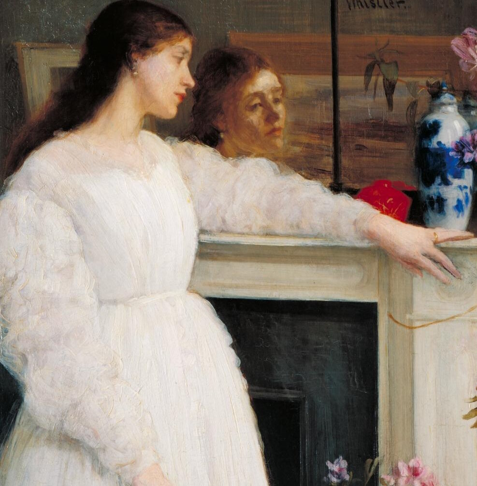

"Кроткая" - это небольшая повесть Фёдора Михайловича Достоевского, написанная в 1875 году и опубликованная в том же году в журнале "Гражданин". Это произведение отличается от более известных романов Достоевского, оно не о преступлении и наказании, а о любви, смирении и трагическом конце отношений, где речь идет о глубине человеческой души и о том, как жестокость может уничтожить любовь и счастье.
Повесть рассказывается от лица неизвестного героя, который называет себя "незнакомцем". Он - человек богатый, но несчастный, полн сомнений и безнадежности, живущий в мире своих собственных мыслей и страхов. В своих "записках" он рассказывает о своей жестокой любви к молодой женщине, которую он называет "Кроткой". Незнакомец узнает о "Кроткой" случайно, он влюбляется в нее с первого взгляда и пытается ее завоевать. Он забирает ее из нищеты и дарит ей богатство и комфорт, но он не может дать ей любви и счастья. Он не способен на глубокие чувства, он закрыт в себе, не видит в "Кроткой" живую душу, а считает ее "вещью", которая должна ему поклоняться. "Кроткая" - девушка смиренная и покорная, она любит Незнакомца безусловно, она прощает ему его жестокость и его неспособность к любви. Она пытается примириться с его холодностью и бесчувственностью, она видит в нем доброго человека, которого нужно спасти. Но она не может вынести его равнодушие и его грубость, она увядает от отсутствия любви и взаимопонимания. Повесть заканчивается трагически: "Кроткая" умирает от грусти и одиночества. Незнакомец, оставшись один, пытается оправдать свои действия, он не видит своей вины, он не понимает, что убил любовь и счастье. Он остается в своем мире безнадежности и сомнений.
Богатый, но несчастный: Незнакомец - это рассказчик и главный герой повести. Он - человек богатый, но несчастный, полн сомнений и безнадежности. Он не способен на глубокие чувства, он не может дать "Кроткой" любви и счастья, он убивает ее душу своей грубостью и равнодушием.
Эгоистичный и жестокий: Незнакомец не видит в "Кроткой" живую душу, он считает ее "вещью", которая должна ему поклоняться. Он эгоистичен и жесток, он не способен на сострадание и понимание.
В мире своих мыслей: Незнакомец заперт в мире своих собственных мыслей и страхов. Он не может понять чувства "Кроткой" и не может выйти из своего эгоцентричного мира.
Не способен на искупление: Даже после смерти "Кроткой" он не чувствует вины, он не понимает, что убил любовь и счастье. Он остается в своем мире безнадежности и сомнений.
Смиренная и покорная: "Кроткая" - это молодая женщина, влюбленная в Незнакомца. Она смиренна и покорна, она прощает ему его жестокость и его неспособность к любви. Она пытается примириться с его холодностью и бесчувственностью, она видит в нем доброго человека, которого нужно спасти.
Жертва несчастной любви: "Кроткая" - это жертва несчастной любви. Она увядает от отсутствия любви и взаимопонимания, она умирает от грусти и одиночества.
Символ смирения: "Кроткая" - это символ смирения, которое в этой повести показывает свою трагическую сторону. Смирение может уничтожить личность и привести к гибели.
Не может противостоять силе: "Кроткая" не может противостоять жестокости Незнакомца. Она слишком слаба и слишком любит его, чтобы покинуть его и спасти себя.
